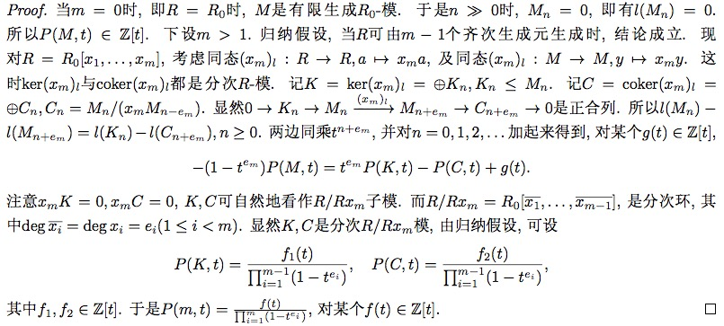

Matsumura《Commutative Algebra》读书笔记
最后更新于：2022年6月25日 下午
在学习非交换环论的过程中, 发现交换环有些东西依然没搞清楚, 复习一下, 顺便再理一理 Matsumura 这本言简意赅的《Commutative Algebra》. 以下环都是指 含幺交换环(commutative ring with identity)
基本概念
可以说书中没一句废话, 开头直接给出下面概念, 并且叙述一些常见等价刻画:
理想的 radical 的定义
prime ideal 的(等价)定义
primary ideal 的定义, 说明 primary ideal 的 radical 是 prime ideal (反之不尽然), 并给出一个理想成为 primary ideal 的充分条件: 包含某个极大理想的某次幂.
定义了环 \(A\) 上的 Zariski 拓扑(素谱) \(Spec(A)\), 极大谱 \(\Omega(A)\), 包含某个集合的素理想全体构成闭集(容易验证确实构成拓扑空间), 给出素谱的基本开邻域基. 由于每个理想都包含在某个极大理想中, 极大理想都是素的, 因此 \(Spec(A) = \emptyset \Leftrightarrow A = 0\), 也就是说 \(Spec\) 的定义是没有毛病的. \(Spec(A)\) 连通当且仅当 \(A\) 中无非平凡幂等元. \[ V(I) = V(J) \Longleftrightarrow \sqrt{I} = \sqrt{J} \]
说明环之间的同态映射 \(f: A \to B\) 可以诱导 \(Spec(B) \to Spec(A)\) 之间的连续映射, 也就是说 \(Spec\) 定义了一个环范畴到拓扑空间范畴的一个逆变函子.
给出了一个关于素理想并的常见引理: 一个理想包含在最多两个不是素理想的理想的并中, 则它必然包含在其中一个理想中. 当然这也说明了任意两个真理想的并不会是整个环.
给出了两个理想互素的定义(和为整个环), 并说明此时它们的积等于交. 证明用到 \((I+J)(I \cap J) \subset IJ\).
定义乘闭子集 \(S\) 准备做局部化, 应用 Zorn 引理说明与 \(S\) 不相交的理想中任意极大元都是素理想, 由此可以证明: \(A\) 中幂零元全体 \(nil(A)\) 是 \(A\) 中所有素理想的交, 也等于 \(A\) 中所有极小素理想的交. 再由此结论, 可以说明每个理想 \(I\) 的 radical: \(\sqrt{I}\) 是所有包含 \(I\) 的素理想的交.
定义环 \(A\) 在 \(S\) 处的局部化 \(S^{-1}A\). \(S^{-1}A = 0 \Leftrightarrow 0 \in S\). 并且我们有自然映射 \(\phi : A \to S^{-1}A, \quad a \mapsto a/1\), 它满足泛性质: 若 \(f: A \to B\) 是环同态, 且 \(f(S)\) 均为 \(B\) 中可逆元, 那么有 \(g: S^{-1}A \to B\) 使得 \(f = g \phi\)
\(A\) 中与 \(S\) 不交的理想(素, 准素)和 \(S^{-1}A\) 中的理想(素, 准素)有保序一一对应.
类似于环, 可以对模 \(M\) 作局部化\(S^{-1}M \simeq S^{-1}A \otimes M\), 这个同构可以由两个自然的合理的互逆映射给出. 并且我们还有同构 \(S^{-1}(M \otimes N) = S^{-1} M \otimes S^{-1}N\). 由于张量函子右正合, 用定义可以证明 \(S^{-1}A \otimes -\) 是正合函子. 也就是说 \(S^{-1}A\) 是平坦 \(A\)-模.
给出有限表示(finite presentation)的定义: 即一个有限生成模, 且其生成关系也是有限生成的. 等价于说有正合列: \(A^m \to A^n \to M \to 0\) 此时我们有: \[ S^{-1}(\hom(M,N)) \simeq \hom(S^{-1}M, S^{-1}N) \] 证明的关键在于对于自由模\(M=A^n\)时有上述自然同构, 再由有限表示, 应用 five lemma 证明上式.
局部整体关系 \(M \to \prod_{\max p} M_{p}\) 是单的. 其中 \(M_{p} = (A - p)^{-1} M\). 证明应用定义说明 \(Ann(x) = A\) 即可.
整环的特殊情形 当 \(A\) 为整环时, \(A\) 在任意乘闭子集处的局部化都可以看做它的分式域的子环, 实际上我们有 \[ A = \bigcap_{\max p} A_{p} \] 证明类似整数作有理数. 定义 \(D = \lbrace a \in A \mid ax \in A \rbrace\) 说明若 \(x \notin A\) 可知 \(D \subset A\) (真包含), 因此 \(D\) 在某个极大理想 \(P\) 中, 可推出 \(x \notin A_{P}\).
我们有自然的同构 \(A/I \otimes M \simeq M/IM\), 同构可由正合列 \(0 \to I \to A \to A/I \to 0\), 用 \(- \otimes M\) 作用上去, 再由定义有 \(I \otimes M \to IM\) 的自然满同态( \(M\) 平坦时可以说明是同构), 得到正合列: \(0 \to IM \to M \to A/I \otimes M \to 0\) 特别地, 我们有: \(S^{-1}(A/I) = S^{-1}A / I(S^{-1}A)\)
Jacobson radical: \(rad(A) = \lbrace x \mid 1+xy \in U(A) \rbrace\) 为所有极大理想的交.
局部环: 若环 \(A\) 只有一个极大素理想 \(\mathfrak{m}\), 则称 \(A\) 为局部环, \(A/\mathfrak{m}\) 称为 \(A\) 的 residue field. 局部环之所以重要是因为, 任意环 \(A\) 在素理想 \(p\) 处作局部化都是一个局部环 \(A_p\). 此时 \(A_p\) 的 residue field 记作 \(k(p)\). 它恰好是整环 \(A/p\) 的分式域 \(K(A/p)\). 由 \(A \to A/p\) 到 \(A_p \to K(A/p)\) 因此, 我们有 \(k(p) \simeq K(A/p)\)
局部映射: 若环 \((A, \mathfrak{m}, k)\) 和 \((A’, \mathfrak{m}’, k’)\) 为局部环, 且有环同态 \(\phi: A \to A’\) 使得 \(\phi(\mathfrak{m}) \subseteq \mathfrak{m}’\), 则称为局部映射, 此时 \(\phi\) 自然诱导了环同态 \(k \to k’\). 现在对任意环同态 \(\phi: A \to B\), 考虑连续映射 \[ \hat{\phi}: Spec(B) \to Spec(A), \quad P \to \phi^{-1}(P) = P \cap A = p \] 此时 \(\phi(A-p) \subseteq B-P\), 即 \(\phi\) 诱导了局部映射 \(\phi_P: A_p \to B_P\).
半局部环 若环 \(A\) 只有有限个极大理想 \(\mathfrak{m}_1, \mathfrak{m}_2, \cdots , \mathfrak{m}_r\), 则称 \(A\) 为半局部环(semilocal ring). 由于不同极大理想必然互素, 因此 \[ rad(A) = \mathfrak{m}_1 \cap \cdots \cap \mathfrak{m}_r = \prod \mathfrak{m}_i \]
NAK lemma 设 \(I\) 是环 \(A\) 的理想, \(M\) 是有限生成(f.g.) \(A\)-模. 若 \(IM = M\), 则存在 \(t \in I\) 使得 \((1+t)M = 0\), 特别地, 若还有 \(I \subseteq rad(A)\), 则 \(M=0\). Proof: 设 \(M=Am_1 + \cdots + Am_s\), 对 \(s\) 数学归纳, \(s=0\) 时, 结论显然, 设 \(M’ = M / Am_s\), 则由归纳假设, \(\exists x \in I\) 使得 \((1+x)M’=0\), 即 \((1+x)M \subseteq Aw_s\), 由于 \(M = IM\), 我们有 \((1+x)M = I(1+x)M \subseteq I(Aw_s) = Iw_s\), 因此存在 \(y \in I\) 使得 \((1+x)w_s = yw_s\). 所以 \((1+x-y)(1+x)M = 0\), \(t = x-y+x+(x-y)x\) 即为所求. NAK lemma 常用如下应用形式: \(I\) 为环 \(A\) 的理想, \(N \subset M\) 为 \(A\)-模, 若 \(M = N + IM\), 且 \(I\) 幂零或 \(M\) 有限生成, 则 \(M=N\). Remark：不要以为有限生成, 理想幂零, 环是整环或者 reduced 条件很苛刻, 其实实际碰到的也都是这些环, 主要问题在于有没有丰富的结果, 这些条件在何时发挥着作用. 有限生成可以用数学归纳, 幂零理想可以用于幂次和根理想.
给定局部环 \((A, \mathfrak{m},k)\) , \(M\) 是 \(A\)-模, 若 \(\mathfrak{m}\) 幂零(例如 \(A\) 是 Artinian)或者 \(M\) 有限生成, 则 \(M\) 的子集 \(G\) 生成 \(M\), 当且仅当它在 \(M/\mathfrak{m}M = M \otimes k\) 下像 \(\bar{G}\) 生成 \(M \otimes k\). Remark: 由于 \(M \otimes k\) 是域 \(k\) 上的向量空间, 因此它的一组基提升之后就能生成 \(M\), 但是一般地并不能保证这些生成元线性无关.
\(M\)-regular: \(a \in A\) 称为 \(M\)-regular, 若 \(0 \to M \xrightarrow{a} M\), 显然, \(M\)-regular 元全体构成了一个乘闭子集. 设 \(S_0\) 为 \(A\)-regular 元全体, 则 \(S_0^{-1}A\) 称为 \(A\) 的 total quotient ring. 此时 \(\phi: A \to S_0^{-1} A\) 是环单同态.
若 \(M\) 是 Noetherian 环 \(A\) 上有限生成模,那么我们有投射表示: \[ \cdots \to X_i \to X_{i+1} \to \cdots X_0 \to M \to 0 \] 其中 \(X_i\) 为有限自由 \(A\)-模, 特别地, 此时 \(M\) 是有限表示(finite presentation). 此时多项式环 \(A[x_1, \cdots, x_n]\) 也是 Noetherian, 类似的形式幂级数环 \(A[[x_1, \cdots, x_n]]\) 也是 Noetherian, \(A\) 上的有限维代数也是 Noetherian. Remark: 任意环中, 理想链的长度不低于极大理想的个数.
环 \(A\) 是 Artinian, 当且仅当它作为 \(A\)-模是有限长的, 当且仅当它是 Noetherian, 并且它的素理想都是极大的.
设 \(\mathfrak{a}\) 是环 \(A\) 的理想, \(b \in A\), 若 \(\mathfrak{a} + bA\) 和 \(\mathfrak{a}:bA\) 都有限生成, 则 \(\mathfrak{a}\) 有限生成. Proof: 设 \(a_i \in \mathfrak{a},\quad b_j \in A\) 使得 \(\mathfrak{a} + bA = \sum a_iA + bA\) 且 \(\mathfrak{a} : bA = \sum c_j A\). 设 \(\mathfrak{a}’ = \sum a_iA + \sum bc_j A \subseteq \mathfrak{a}\). 对任意 \(a \in \mathfrak{a}\), 我们有 \(a \in \mathfrak{a}’ + bA\), 即 \(a \equiv rb \mod \mathfrak{a}’\). 因此 \(rb \in \mathfrak{a}\). 即 \(r \in \mathfrak{a}: bA\), \(rb \in \mathfrak{a}’\), 因此 \(a \in \mathfrak{a}’\), 即 \(\mathfrak{a} = \mathfrak{a}’\).
(Cohen)环 \(A\) 是 Noetherian, 当且仅当它的每个素理想都是有限生成的. Proof: 记 \(A\) 中所有非有限生成理想构成的集合为 \(F\), 取 \(F\) 中极大元 \(\mathfrak{a}\) (Zorn 引理保证可行性), 那么由条件知道 \(\mathfrak{a}\) 不是素理想, 因此存在 \(a,b \in A\), 使得 \(a, b \notin \mathfrak{a}\) 且 \(ab \in \mathfrak{a}\). 又因为 \(\mathfrak{a}\) 的极大性知: \(\mathfrak{a}+bA\) 和 \(\mathfrak{a}:bA\) 有限生成, 所以 \(\mathfrak{a}\) 有限生成, 所以 \(F = \emptyset\).
定义 \(Supp(M) = \lbrace p \in Spec(A) \mid M_p \neq 0 \rbrace\). 若 \(M\) 有限生成, 则 \(Supp(M) = V(Ann(M))\). 此时 \(Supp(M)\) 就是零化 \(M\) 的理想的闭包, 没毛病, 完美.
平坦性(Flatness)
设 \(S: \quad \cdots \to N \to N’ \to N’’ \to \cdots\) 是任意 \(A\)-模序列. 称 \(A\)-模 \(M\) 是平坦的, 如果 \(S\) 正合, 则 \(S \otimes M\) 正合. 称 \(M\) 忠实平坦的(faithful flat), 如果 \(S\) 正合当且仅当 \(S \otimes M\) 正合. 例子: 投射模是平坦的, 自由模是忠实平坦的.
平坦模的等价刻画
- \(M\) 是平坦的.
- 若 \(0 \to N \to N’\) exact, 则 \(0 \to N \otimes M \to N’ \otimes M\) exact.
- 对任意(有限生成)理想 \(I\), \(0 \to I \otimes M \to M\) exact. 即 \(I \otimes M \simeq IM\).
- \(Tor_1 ^A(M,A/I) = 0\) 对任意(有限生成)理想 \(I\) 成立.
- \(Tor_1 ^A(M,N) = 0\) 对任意(有限生成)模 \(N\) 成立.
- 若 \(\sum a_i x_i = 0\), 则存在 \(b_{ij} \in A, y_j \in M\) 使得 \(\sum a_i b_{ij} = 0\) 且 \(x_i = \sum b_{ij}y_j\).
平坦模的基本性质
Transitivity: 设 \(\phi: A \to B\) 是平坦环同态(即 \(B\) 看做 \(A\)-模是平坦的), 那么平坦 \(B\)-模 \(N\) 也是平坦 \(A\)-模. (直接用定义证明即可)
Change of base: 设 \(\phi: A \to B\) 是环同态, 若 \(M\) 是平坦 \(A\)-模, 则 \(M \otimes B\) 是平坦 \(B\)-模.
Localization: \(S^{-1}A\) 是平坦 \(A\)-模. (直接用元素定义可证)
Tor 函子和张量函子交换: 设 \(\phi: A \to B\) 是平坦同态, \(M,N\) 是 \(A\)-模, 则有 \[ Tor_i ^A(M,N) \otimes_A B = Tor_i ^B(M \otimes_A B,N \otimes_A B) \] 当 \(A\) Noetherian 且 \(M\) 有限生成, 则 \[ Ext_i ^A(M,N) \otimes _A B = Ext_i ^B(M \otimes_A B,N \otimes_A B) \] Proof: 给定 \(M\) 的一个投射(自由)表示: \(\cdots \to X_1 \to X_0 \to M \to 0\). 由于 \(B_A\) 平坦, 我们得到 \(M \otimes_A B\) 的投射表示: \(\cdots \to X_1 \otimes_A B \to X_0 \otimes_A B \to M \otimes_A B \to 0\). 因此我们有: \[ Tor_i ^B(M \otimes_A B,N \otimes_A B) = H_i(X. \otimes_A N \otimes_A B) = H_i(X. \otimes_A N)\otimes_A B = Tor_i ^A(M,N) \otimes_A B \] 当 \(A\) Noetherian 且 \(M\) 有限生成时, 我们可以给 \(M\) 的一个有限自由表示, 再由 \(B\) 平坦得到了, \(M \otimes _A B\)的有限自由表示: \(\cdots \to X_1 \otimes_A B \to X_0 \otimes_A B \to M \otimes_A B \to 0\) 由此得到复形: \[ 0 \to \hom_B(M \otimes_A B, N \otimes _A B) \to \hom_B(X_0 \otimes_A B, N \otimes _A B) \to \hom_B(X_1 \otimes_A B, N \otimes _A B) \to \cdots \] 由于 \(X_i\) 是有限自由模, 因此 \(\hom_B(X_i \otimes B, N \otimes B) = \hom_A(X_i, N) \otimes _A B\). 所以 \[ Ext_i ^B(M \otimes_A B,N \otimes_A B) = H_i(\hom_A(X_i, N) \otimes_A B) = H_i(\hom_A(X_i, N)) \otimes_A B = Ext_i ^A(M,N) \otimes_A B \]
特别地, 去 \(B = S^{-1}A\).
设 \(M\) 是平坦 \(A\)-模, 则 \(A\)-regular 元都是 \(M\)-regular 元. 这只因为 \(0 \to A \xrightarrow{a} A\) 可推出 \(0 \to M \xrightarrow{a}M\).
局部环上有限生成模是自由模
\((A,\mathfrak{m},k)\) 是局部环, \(M\) 是平坦 \(A\)-模, 若 \(\mathfrak{m}\) 幂零或 \(M\) 有限生成, 则 \(M\) 是自由模. 在基本概念 21中, \(G\) 生成了 \(M\), 如果 \(G\) 中元素线性无关, 那么 \(G\) 自然就是 \(M\) 的一组基(从而是自由模), 也就是说, 我们只需证明 \(G =\lbrace x_1 \cdots x_n \rbrace\)在 \(M/mM = M \otimes k\)下的象线性无关, 则由 \(G\) 线性无关. 而\(\mathfrak{m}\) 幂零或 \(M\) 有限生成这个条件本质上是保证 \(M/mM \neq 0\) (由 NAK lemma). 然后对 \(n\) 应用数学归纳, 并利用 平坦模等价刻画 6 说明线性无关性. 从而命题得证.
局部环上的投射模都是自由模
平坦模
设 \(A \to B\) 是平坦同态, 设 \(I,J\) 是 \(A\) 是理想, 则
- \((I \cap J)B = IB \cap JB\)
- \((I : J)B = IB : JB\), 其中\(J\)是有限生成的.
Proof: 由正合列: \(0 \to I \cap J \to A \to A/I \otimes A/J\), 张量上 \(B\)得到 \(0 \to (I \cap J)B \to B \to B/IB \otimes B/JB\). 因此 \((I \cap J)B = IB \cap JB\). 当 \(J\) 有限生成时, 只需证明 \(J = aA\) 的形式: 由正合列 \(0 \to (I :aA) \to A \xrightarrow{f} \to A/I\). 其中 \(f(x) = ax \mod I\). 张量上 \(B\) 即可得到结论, 对于一般情况应用 \[ (I: \sum_{i=1} ^n a_i A) = \bigcap_{i=1} ^n (I : a_i A) \]
平坦映射讲一个保持理想的交, 一种反映平坦的地方吧.
平坦的局部整体性
设 \(f: A \to B\) 是环同态(即 \(B\) 是交换结合 \(A\) 代数), 那么下面条件等价:
- \(B\) 作为 \(A\)-模平坦.
- \(B_P\) 作为 \(A_p\)-模平坦, 其中 \(p = P \cap A, \quad P \in Spec(B)\)
- \(B_P\) 作为 \(A_p\)-模平坦, 其中 \(p = P \cap A, \quad P \in \omega(B)\) Proof: \(1 \to 2 \to 3\) 显然, \(3 \to 1\), 只需证明 \(Tor_1 ^A(B,N)=0\). 由\(Tor_1 ^{A_p}(B_P, N_p) = 0, P \in \omega(B)\). 知道结论成立.
忠实平坦 faithful flat (f.f.)
一个自然的问题, 平坦模何时成为忠实平坦模呢? 设 \(M\) 是 \(A\)-模, 下面条件等价
- \(M\) 是 f.f. \(A\)-模;
- \(M\) 是平坦 \(A\)-模, 且对任意 \(A\)-模 \(N \neq 0\), \(N \otimes M \neq 0\);
- \(M\) 是平坦 \(A\)-模, 且对任意 \(A\) 的极大理想 \(\mathfrak{m}\), \(mM \neq M\). Proof: \(1 \to 2\): 由 \(0 \to N \to 0\) 和 \(0 \to N \otimes M \to 0\) 同时正合性证毕. \(2 \to 3\): 由于 \(A/\mathfrak{m} \neq 0\), 所以 \(M/\mathfrak{m} M \simeq A/\mathfrak{m} \otimes M \neq 0\). \(3 \to 2\): 对任意 \(0 \neq x \in N\), 存在 \(I\) 使得 \(Ax \simeq A/I\), 设 \(\mathfrak{m}\) 为包含 \(I\) 的一个极大理想, 于是 \(IM \subseteq \mathfrak{m}M \subset M\), 从而 \((A/I)\otimes M = M/IM \neq 0\). 又由 \(M\) 平坦知: \(0 \to (A/I) \otimes M \to N \otimes M\) 正合, 所以 \(N \otimes M \neq 0\). \(2 \to 1\): 设 \(S: N’ \xrightarrow{f} N \xrightarrow{g} N’’\) 为 \(A\)-模序列. 若 \(S \otimes M : N’\otimes M \xrightarrow{\hat{f}} N \otimes M \xrightarrow{\hat{g}} N’’\otimes M\). 由于 \(- \otimes M\) 函子正合. \(Im(gf) \otimes M = Im(\hat{f}\hat{g})=0\). 从而\(Im(gf)=0\), 即 \(S\) 是复形, \(H(S) \otimes M = H(S \otimes M) = 0\), 从而 \(H(S) = 0\), 证毕.
局部环中平坦和忠实平坦
设 \((A,\mathfrak{m}), (B,\mathfrak{n})\) 是局部环, \(\phi: A \to B\) 是局部同态, 若 \(M \neq 0\) 是有限 \(B\)-模或 \(\mathfrak{n}\) 幂零，则 \[ M \text{是平坦模} \Longleftrightarrow M \text{是忠实平坦模} \] 由 \(\mathfrak{m} M \subseteq \mathfrak{n}M \neq M\) (NAK lemma), 从而由忠实平坦模的等价刻画知结论成立. 推论 1: \(B\) 在 \(A\) 上平坦等价于忠实平坦.(取 \(M=B\)) 推论 2: 若 \(M\) 是有限生成 \(A\)-模或 \(\mathfrak{m}\) 幂零, 则 \(M\) 平坦等价于忠实平坦(其实本结论可以由 局部环上有限生成模是自由模 小节直接推出).
忠实平坦模的性质
类似于平坦模, transitive, change of base 都成立. 并且它还满足 descent property: 若 \(B\) 是 \(A\)-代数, \(M\) 是忠实平坦 \(B\)-模, 也是忠实平坦 \(A\)-模, 那么 \(B\)也是忠实平坦 \(A\)-模. 忠实平坦在环扩张中起了很重要的作用 设 \(\phi: A \to B\) 是 f.f. 同态 则:
- 对任意 \(A\)-模 \(N\), \(N \to N \otimes B, \quad x \mapsto x \otimes 1\) 是单的. 特别地, \(\phi\) 是单的, 因此 \(A\) 可以看做 \(B\) 的子环.
- 对任意 \(A\) 的理想 \(I\), 我们有 \(IB \cap A = I\)
- \(\hat{\phi}: Spec(B) \to Spec(A)\) 是满的.
Proof:
\(0 \neq x \in N\), 则 \(0 \neq Ax \subset N\). 因此 \(Ax \otimes B \in N \otimes B\)(\(B\)平坦). 又 \(Ax \otimes B = (x \otimes 1)(A \otimes B) = (x \otimes 1)B\). 由 \(B\) 忠实平坦知 \(x \otimes 1 \neq 0\).
由于 \(B \otimes _A (A/I) = B/IB\) 在 \(A/I\)上 忠实平坦, 因此 \(A/I \subseteq B/IB\). 因此 \(IB \cap A \subset I\). 又反方向显然, 证毕.
设 \(p \in Spec(A)\). \(B_p = B \otimes A_p\) 在 \(A_p\) 上忠实平坦, 因此 \(pB_p \neq B_p\) (这是关键的一步). 取 \(B_p\) 中一个包含 \(pB_p\) 的极大理想 \(\mathfrak{m}\). 则 \(pA_p \subseteq \mathfrak{m} \cap A_p\), 因此 \(pA_p = \mathfrak{m} \cap A_p\). 设 \(P = \mathfrak{m} \cap B\). 则 \[ P \cap A = \mathfrak{m} \cap B \cap A = \mathfrak{m} \cap A = \mathfrak{m} \cap A_p \cap A = pA_p \cap A = p \] 要理解上面式子关键在于 \(0 \to A \to A_p \to B_p = A_p \otimes B\). 最后 \(\mathfrak{m}\) 被拉回之后就在 \(B\) 中了.
忠实平坦的等价刻画
之前已经给了一些平坦的等价可以, 都是与张量积有关, 下面给出的都与谱有关. 即与素理想有关. 设 \(\phi: A \to B\) 是平坦映射, 以下结论等价:
- \(\phi\) 是忠实平坦的;
- \(\phi\) 是平坦的, 且 \(\hat{\phi}: Spec(B) \to Spec(A)\) 是满的;
- \(\phi\) 是平坦的, 且对任意 \(A\) 中极大理想 \(\mathfrak{m}\),存在 \(B\) 中极大理想 \(\mathfrak{m}’\) 使得 \(\mathfrak{m}’ \cap A = \mathfrak{m}\).
这注定了它和 NAK lemma 之间密切的联系.
\(1 \to 2\) 已证, \(2 \to 3\) 是因为存在 \(p’ \in Spec(B)\) 使得 \(p’ \cap A = \mathfrak{m}\). 找一个包含 \(p’\) 的极大理想 \(\mathfrak{m}’\). 则 \(\mathfrak{m} \cap A = \mathfrak{m}\) (由于 \(\mathfrak{m}\) 极大). \(3 \to 1\) 是因为此时 \(\mathfrak{m}B \subseteq \mathfrak{m}’B = \mathfrak{m} \subset B\). 因此 \(B\) 在 \(A\) 上忠实平坦.
忠实平坦上的平坦
设 \(B\) 是 \(A\) 上的忠实平坦 \(A\)-代数. \(M\) 是 \(A\)-模. 则 \(M\) 是 \(A\) 上的(忠实)平坦模 \(\Longleftrightarrow\) \(M\) 是 \(B\) 上的(忠实)平坦模。
\(\Longrightarrow\) 就是 change of base 的结果. \(\Longleftarrow\) 成立是因为一般地我们有: \[ (S \otimes_A M) \otimes_A B = (S \otimes_A B) \otimes_B (M \otimes_A B) \]
整环上的忠实平坦
设 \(A\) 设整环, 整环 \(B\) 满足 \(A \subseteq B \subseteq Q(A)\), 其中 \(Q(A)\) 是 \(A\) 的分式域. 则 \(B\) 在 \(A\) 上忠实平坦当且仅当 \(B=A\). Proof: 若 \(B \neq A\), 则对任意 \(0 \neq x \in B \backslash A\), \(x = y/s,\quad y,s \in A, s \notin U(A)\), 从而 \(sB \cap A = A \neq sA\). 因此 \(B\) 在 \(A\) 上不忠实平坦, 所以 \(B = A\).
但是 \(A\) 与 \(Q(A)\) 之间的任意环都是平坦的(这可以由 平坦模的等价刻画 6 得到)
Going-up and Going-down
在这里还是重提以下 Going-up 和 Going-down 是什么鬼吧, 这部分之前一直糊里糊涂的过了.
设 \(\phi: A \to B\) 是环同态. 我们说 Going-up 条件成立是指: 对任意 \(p \subset p’ \in Spec(A)\), 对任意在理想 \(p\) 上的 \(P \in Spec(B)\)(即\(P \cap A = p\)). 都存在 \(P’ \in Spec(B)\), 使得 \(P’ \cap A = p’\) 且 \(P \subset P’\)
上面 \(p \subset p’\) 是真包含, 若上述 \(P’\) 存在, 包含关系必然也是真包含的.
类似地, 我们说 Going-down 条件成立是指: 对任意 \(p \subset p’ \in Spec(A)\), 对任意在理想 \(p’\) 上的 \(P’ \in Spec(B)\)(即 \(P’ \cap A = p’\)). 都存在 \(P \in Spec(B)\), 使得 \(P \cap A = p\) 且 \(P \subset P’\). 这等价于: 对任意 \(p \in Spec(A)\), 对任意包含 \(pB\) 的极小素理想 \(P\) 都有 \(P \cap A = p\).
上面 \(p \subset p’\) 是真包含, 若上述 \(P\) 存在, 包含关系必然也是真包含的.
平坦 Going-down
设 \(\phi: A \to B\) 是平坦映射, 则 \(\phi\) 满足 Going-down 条件. Proof: 设 \(p’ \subset p \in Spec(A)\), \(P \in Spec(B)\) 使得 \(P \cap A = p\). 则 \(B_P = B_p\) 在局部环 \(A_p\) 上平坦, 因此忠实平坦, 所以 \(Spec(B_P) \to Spec(A_p)\) 是满的, 设 \(P^{\star} \ subset B_P\) 满足 \(P^{\star} \cap A_p = p’A_p\). 则 \(P’ = P^{\star} \cap B\) 即为所求.
整 Going-up
设 \(A \subset B\) 是环, 且 \(B\) 在 \(A\) 上整. 则:
- \(Spec(B) \to Spec(A)\) 是满的
- \(B\) 中在某个 \(Spec(A)\) 上的所有素理想互不包含.
- Going-up 条件成立.
- 若 \(A\) 是局部环, \(p\) 是唯一极大理想, 则 \(B\) 中在 \(p\) 上的素理想都是极大理想.
先证\(4\): 设 \(\mathfrak{n}\) 为 \(B\) 的一个极大理想, 设 \(\mathfrak{m} = \mathfrak{n} \cap A\). \(\bar{B} = B / \mathfrak{n}\) 是域, 并且在环 \(\bar{A} = A/\mathfrak{m}\) 上整, 对 \(A\) 中任意非零元 \(x\). \(1/x \in \bar{B}\). 因此 \[
(1/x)^n + a_1 (1/x)^{n-1} + \cdots a_n = 0
\] 所以 \(\frac{1}{x} = -(a_1 + a_2 x + a_n x^{n-1} \in A\). 即 \(\bar{A}\) 是域, \(\mathfrak{m} = p\) 为 \(A\) 的唯一极大理想. 设 \(P \in Spec(B)\) 使得 \(P \cap A = p\). 则 \(\bar{B} = B/P\) 是整环, 且在域 \(\bar{A} = A/p\) 上整, 易知 \(\bar{B}\)也是域, 即 \(P\) 是极大理想. 再证 1, 2: 对任意 \(p \in Spec(A)\). \(B_p = B \otimes _A A_p = (A-p)^{-1}B\) 在 \(A_p\) 上整且包含 \(A_p\). 又因为 \(B\) 中在 \(p\) 上的素理想与 \(B_p\) 中在 \(pA_p\) 的素理想一一对应, 在由 4 知道 它对应于 \(B_p\) 中的极大理想, 因此 1, 2得证. 最后证明 3: 设 \(p \subset p’ \in Spec(A)\), \(P \in Spec(B)\) 使得 \(P \cap A = p\), \(B/P\) 包含 \(A/p\) 且在其上整. 由 \(1\) 知, 存在 \(P’/P\) 使得 \(P’/P \cap A/p = p’/p\). 所以 \(P’ \in Spec(B)\) 满足 \(P’ \cap B = p’\).
一个有用的结论: 整环 \(B\) 在 \(A\) 上整, 则 \(B\) 是域当且仅当 \(A\) 是域.
代数几何中的 Constructible Set
Noetherian 空间
称一个拓扑空间 \(X\) 为 Noetherian, 如果它满足闭集的降链条件, 等价于开集的升链条件. 显然有限个 Noetherian 空间的并还是 Noetherian 空间, Noetherian 空间的子空间还是 Noetherian 空间. Noetherian 空间是紧的.
由于 Noetherian 环 \(A\) 满足素理想的降链条件, 此时 \(Spec(A)\) 是 Noetherian 空间.
不可约闭集(irreducible closed set)
一个闭集称为不可约的, 如果它不能写成两个真闭子集的并.
在 Noetherian 空间中, 每个闭集都可以写成有限个不可约闭子集的并. 并且这些不可约子集互不包含, 称每一个都为这个闭集的不可约部分.
局部闭集(locally closed)
一个集合 \(Z\) 称为 locally closed 如果 \(\forall z \in Z, \quad \exists U_z\) 使得 \(U_z \cap Z\) 是开邻域 \(U_z\) 中的闭集. 这等价于说 \(Z\) 是拓扑空间 \(X\) 中某个开集和闭集的交. 特别地, 开集和闭集都是 locally closed.
Noetherian 空间中 constructible 集
设 \(X\) 是一个 Noetherian 空间, 称集合 \(Z \subseteq\) 是一个 constructible 集, 如果它是有限个 locally close 集合的并. (非 Noetherian 空间中也可以定义 constructible 集, 但是很复杂) 显然 constructible 集关于交并差都是封闭的.
设 \(X\) 是一个 Noetherian 空间, 称集合 \(Z \subseteq\) 是一个 pro-constructible(对应的 ind-constructible)集, 如果它是任意一族 constructible 集的交(对应的并).
constructible 集 判定方法, Noetherian 空间 \(X\) 的子集 \(Z\) 称为 constructible 集的充要条件是: 对任意不可约闭子集 \(X_0 \subseteq X\), 若 \(X_0 \cap Z\) 在 \(X_0\) 中稠密, 则 \(X_0 \cap Z\) 包含 \(X_0\) 中某个非空开集. Proof: 必要性: 若 \(Z\) 是 constructible 集, 则 \[ X_0 \cap Z = \bigcup _{i=1} ^m (U_i \cap F_i) \] 其中 \(U_i\) 是 \(X\) 中开集, \(F_i\) 是 \(X\) 中不可约闭子集(这是可以做到的是因为 Noetherian 空间中闭集都可以写成有限个不可约闭集的并), 且 \(U_i \cap F_i\) 是非空的(如果空就直接踢掉了). 则 \(\bar{U_i \cap F_i} = F_i\)(这是因为否则 \(\bar{U_i \cap F_i} \cup (c(U_i) \cap F_i) = F_i\), 但是 \(F_i\) 是不可约闭集). 因此 \[ X_0 = \bar{X_0 \cap Z} = \bigcup _{i=1} ^m F_i \] 因此必有某个 \(F_i = X_0\). 从而 \(U_i \cap X_0 = U_i \cap F_i\) 是 \(X_0\) 中的一个非空开集. 充分性: 我们对 \(\bar{Z}\) 进行应用所谓的超限数学归纳. 首先, \(\emptyset\) 是 constructible 集, 其次假设 \(\bar{Z}\) 中所有满足条件且 \(\bar{Z’} \subset \bar{Z}\)(严格包含)的 \(Z’\) 都是 constructible 集. 我们证明此时 \(Z\) 也是 constructible 集: 设 \(\bar{Z} = F_1 \cup \dots \cup F_r\) 是 \(\bar{Z}\) 的不可约分解. 那么 \(\bar{F_1 \cap Z} = F_1\)(毕竟不可约闭集). 因此, 由条件存在 \(F_1\) 中的真子集 \(F_1’\) 使得 \(\emptyset \neq F_1 - F_1’ \subseteq Z\). 此时定义 \(F^{\star} = F_1’ \cap F_2 \cap cdots \cap F_r\). 那么 \(Z = (F_1 - F_1’) \cup (Z \cap F^{\star})\). 由于 \(F_1 - F_1’\) 是 locally closed, 又因为 \(Z \cap F^{\star}\) 满足条件: 若 \(X_0\) 是不可约闭集且 \(X_0 = \bar{Z \cap F^{\star} \cap X_0} \subseteq \bar{F^{\star}} = F^{\star}\), 从而 \(Z \cap F^{\star} \cap X_0 = Z \cap X_0\) 从而包含 \(X_0\) 中的一个非空开集. 并且 \(\bar{Z \cap F^{\star}} \subseteq F^{\star} \subset Z\). 由数学归纳知 \(Z \cap F^{\star}\) 是 constructible 集. 从而 \(Z = (F_1 - F_1’) \cup (Z \cap F^{\star})\) 是 constructible 集.
以上结果对一般地 Noetherian 空间都成立.
考察上述定义在 \(Spec(A)\) 上的具体表现
\(Spec(A)\) 中的不可约闭集: 设 \(F\) 是 \(Spec(A)\) 中的闭集, 则 \(F\) 不可约当且仅当, \(F = V(p)\), 其中 \(p \in Spec(A)\), 可以看出此时 \(p\) 由 \(F\) 唯一决定。 充分性由 \(p \in V(p)\) 显然. 必要性. \(F = V(I)\). 若 \(I\) 不是素理想, 则存在 \(a, b \notin I, ab \in I\), 即\(F = (F \cap V(a)) \cup (F \cap V(b))\). 矛盾于 \(F\) 不可约.设 \(\phi: A \to B\) 是环同态, 设 \(X = Spec(A), Y = Spec(B)\), 由自然的 \(f: Y \to A\). 那么 \(f(Y)\) 在 \(X\) 中稠密, 当且仅当 \(\ker(\phi) \subseteq nil(A)\). 特别地, 当 \(A\) reduce 时, \(f(Y)\) 在 \(X\) 中稠密, 当且仅当 \(\phi\) 是单同态. 证明 \(\bar{f(Y)} = V(I)\), 其中 \(I = \bigcap_{p \in Y} \phi^{-1}(p) = \phi^{-1}(\bigcap_{p \in Y} p) = \phi^{-1}(nil(B))\). 显然 \(\ker(\phi) \subseteq I\). 若 \(f(Y)\) 在 \(X\) 中稠密, 则 \(V(I) = X\). 因此 \(I \subseteq nil(A)\), 从而 \(\ker(\phi) \subseteq nil(A)\). 另一方面, 若 \(\ker(\phi) \subseteq nil(A)\), 则 \(I = \phi^{-1}(nil(B)) \subseteq nil(A)\). 从而 \(\bar{f(Y)} = X\).
之前提到了, \(Spec\) 是环范畴到拓扑范畴的逆变函子, 现在是说, 这个拓扑空间的一些性质可以与环的一些性质有一个对应关系, 这个函子保持了很好的性质.
之前关于 constructible 集的定义都是在 Noetherian 空间中考虑的, 因此我们下面考虑的环一般是 Noetherian 环:
(Chevalley) 设 \(A\) 是 Noetherian 环, \(B\) 是 \(A\) 上的有限生成代数(从而也是 Noetherian 环). 设 \(\phi: A \to B\) 是自然映射, 记 \(X = Spec(A), Y = Spec(B)\) 则 \(f: Y \to X\). 则 \(f\) 将 \(Y\) 中 constructible 集 映成 \(X\) 中的 constructible 集.
先证明 \(f(Y)\) 是 constructible 集, 在利用下面的引理.
另一方面设 \(A\) 是 Noetherian 环, \(X’\) 是 \(X = Spec(A)\)中的 constructible 集, 那么存在 \(A\) 的有限生成代数 \(B\) 使得 \(Spec(B)\) 在 \(Spec(A)\) 中的像恰好是 \(X’\).
对于 \(X’ = D(a) \cap V(I)\), 然后考虑 \(B = \lbrace 1,a,a^2,\cdots \rbrace ^{-1} (A/I)\), 然后考虑 constructible 集.
pro-constructible 集 设 \(A\) 是 Noetherian 环, \(\phi: A \to B\), \(\bar{\phi}(Spec(B))\) 是 \(Spec(A)\) 中的 pro-constructible 集.
\(f: spec(B) \to Spec(A)\)成为(开,闭)连续映射
设\(A\)是 Noetherian 环, \(B\) 是 \(A\) 上的有限生成代数, 假设它们之间的自然映射 \(\phi: A \to B\) 满足 Going-down 条件, 则对应的自然映射 \(f: Spec(B) \to Spec(A)\) 是开(连续)映射.
设 \(U\) 是 \(Spec(B)\) 中开集, 则 \(f(U)\) 是 constructible 集, 再由 Going-down 条件知道 \(Spec(A) - f(U)\) 是闭集.
设 \(\phi: A \to B\) 满足 Going-up 条件, 且 \(B\) 是 Noetherian 环, 则 \(f: Spec(B) \to Spec(A)\) 是闭映射.
Noetherian 环上的 Associated Primes
给定一个 Noetherian 环上的模 \(M\), 我们称 \(A\) 的一个素理想为 \(M\) 的 associated prime, 如果它满足下面等价的条件:
- \(\exists x \in M\) 使得 \(Ann(x) = p\);
- \(M\) 包含一个子模同构于 \(A/p\).
我们把 \(M\) 中所有的 associated prime ideal 记为 \(Ass(M)\). 有时也用 \(Ass_A(M)\) 来防止歧义.
由下面三个结论说明, \(Ass(M)\) 确实是 \(M\) 的一个重要不变量.
(本节)环默认为 Noetherian 环.
\(Ann(x)\) 全体中的极大元在 \(Ass(M)\) 中
设 \(p\) 是 \(\lbrace Ann(X) \mid 0 \neq x \in M \rbrace\). 则 \(p \in Ass(M)\)
由上, 显然可知道 \(Ass(M) = \emptyset \Longleftrightarrow M=0\). 即 \(Ass(M)\) 是元素是十分丰富的. \(M\) 中的零因子是 \(Ass(M)\) 中元素的并.
\(Ass(M)\) 与局部化可交换
给定一个乘闭子集 \(S\), 记 \(A’ = S^{-1}A, M’ = S^{-1} B\), 则 \[ Ass_A(M’) = f(Ass_{A’}(M’) = Ass_A(M) \cap \lbrace p \mid p \cap S = \emptyset \rbrace \] 其中 \(f: Spec(A’) \to Spec(A)\) 为自然映射.
\(Supp(M)\) 的极小元全体等于 \(Ass(M)\) 的极小元全体
\(Ass(M) \subset Supp(M)\) 且 \(Supp(M)\) 中的极小元在 \(Ass(M)\) 中(从而 \(Supp(M)\) 的极小元全体等于 \(Ass(M)\) 的极小元全体). Proof: 设 \(p \in Ass(M)\), 则由正合列 \(0 \to A/p \to M\), 从而 \(0 \to A_p/pA_p \to M_p\) 正合. 由 \(A_p/pA_p \neq 0\), 从而 \(M_p \neq 0\), 从而 \(p \in Supp(M)\). 设 \(p \in Supp(M)\), 由于局部化和 \(Ass(M)\) 可交换, \(p \in Ass_A(M)\) 等价于 \(pA_p \in Ass_{A_p}(M_p)\). 因此, 我们不妨设 \((A, p)\) 是局部环, \(M \neq 0\). 且对任意 \(q \subset p, M_q = 0\), 即 \(Supp(M) = \lbrace p \rbrace\). 由于 \(Ass(M)\) 非空, 且包含于 \(Supp(M)\) 中, 因此 \(p \in Ass(M)\).
设 \(I\) 是 \(A\) 的理想, 则 \(Ass(A/I)\) 中的极小元全体为包含 \(I\) 的极小素理想全体. 从而 \(\bigcap _{p \in Ass(A/I)} p = \sqrt{I}\)
若 \(0 \to M’ \to M \to M’’\) 是 \(A\)-模正合列, 则 \(Ass(M) \subset Ass(M’) \cup Ass(M’’)\) Proof: 设 \(p \in Ass(M)\), 则存在 \(N \subseteq M\) 使得 \(N \simeq A/p\). 若 \(N \cap M’ = 0\)(本质上是和 \(f(M’)\) 的交). 则 \(N\) 同构于 \(M’’\) 的一个子模, 因此 \(p \in Ass(M’’)\). 若 \(N \cap M’ \neq 0\), 则任取 \(0 \neq x \in N \cap M’\), 则 \(Ann(x) = p\).
设 \(M \neq 0\) 是 Noetherian 环上的有限生成模, 则存在(长为 \(n\) 的)子模链 \((0) = M_0 \subset \cdots \subset M_{n-1} \subset M_n = M\) 使得 \(M_i / M_{i-1} = A/p_i\), 其中 \(p_i \in Spec(A)\). 从而 \(Ass(M) \subset \lbrace p_1 \cdots p_n \rbrace\) 是有限集. Proof: 由 \(M \neq 0\) 则 \(Ass(M) \neq \emptyset\), 选择 \(M_1 \subseteq M\), 使得 \(M_1 \simeq A/p_1\), 若 \(M_1 \neq M\), 再对 \(M/M_1\) 做同样的事情, 由于 \(M\) 是 Noetherian 的, 因此次过程在有限步后终止. 又因为 \[ Ass(M) \subseteq Ass(M_1) \cup Ass(M_2/M_1) \cup \cdots \cup Ass(M_n /M_{n-1}) \] 再由 \(Ass(M_i/M_{i-1}) = Ass(A/p_i)=p_i\) 知结论成立.
Primary Decomposition(准素分解)
本节设 \(M\) 是 Noetherian 环 \(A\) 上的模.
称一个 \(A\)-模是 co-primary 如果它仅有一个 associated prime ideal. \(N \subseteq M\) 称为 \(M\) 的 primary 子模, 如果 \(M/N\) 是 co-primary. 若 \(Ass(M/N) = \lbrace p \rbrace\), 则称 \(N\) 为 \(p\)-primary 或称 \(N\) 属于 \(p\)(的 primary submodule).
co-primary 等价刻画
\(M\) 是 co-primary 的, 当且仅当 \(M \neq 0\), 且若 \(a \in A\) 是 \(M\) 的零因子, 则 \(a\) 在 \(M\) 上 locally nilpotent(\(\forall x \in M, \exists n\), such that \(a^n x = 0\)). Proof: 若 \(Ass(M) = \lbrace p \rbrace\), 则对任意 \(x \in M\), \(Ass(Ax) \subseteq Ass(M) = \lbrace p \rbrace\), 若 \(Ass(Ax) = \emptyset\)(取 \(n = 1\) 即可), 若 \(Ass(Ax) = \lbrace p \rbrace\). 因此 \(p\) 是 \(Supp(Ax) = V(Ann(x))\) 中唯一的极小元素. 即 \(p = \sqrt{Ann(x)}\). 另一方面, 定义 \(p = \lbrace a \in A \mid a \text{在} M \text{上 locally nilpotent} \rbrace\). 它显然是一个理想. 对任意 \(q \in Ass(M)\), 存在 \(x \in M\) 使得 \(q = Ann(x)\). 因此 \(p \subseteq \sqrt{q} = q\). 另一方面由于 \(p\) 为所有 associated prime 理想的并, 因为 \(q \subseteq p\). 从而 \(Ass(M) = \lbrace p \rbrace\).
当 \(M = A/q\) 时, 上述条件恰好就是 \(q\) 为准素理想的定义.
p-primary 的交依然是 p-primary
设 \(p\) 是 \(A\) 的素理想, \(Q_1, Q_2\) 是 \(M\) 的 \(p\)-primary 子模. 则 \(Q_1 \cap Q_2\) 也是 \(M\) 的 \(p\)-primary 子模.
由 \(0 \to M / Q_1 \cap Q_2 \to M/Q_1 \oplus M/Q_2\) 显然
准素分解闪亮登场
设 \(N\) 是 \(M\) 的一个子模, 我们称 \(N = Q_1 \cap \cdots \cap Q_r\) 是 \(N\) 的一个准素分解, 如果 \(Q_i\) 是 \(M\) 中的 primary 子模. 我们称一个准素分解是 irredundant 如果每个准素子模都不能去掉, 并且 \(Ass(M/Q_i)\) 各不相同. 对于任意准素分解, 我们都可以通过有限次剔除之后使得它的每一个准素子模都不可去掉, 而如果有两个准素子模属于相同的 associated prime \(p\), 则我们可以把它们交起来构成一个新的准素子模, 从而可知
任意准素分解都可以化成 irredundant 准素分解.
设 \(N = Q_1 \cap \cdots \cap Q_r\) 是 \(N\) 的一个 irredundant 准素分解, 若 \(Q_i\) 属于 \(p_i\). 则 \(Ass(M/N) = \lbrace p_1 \cdots p_r \rbrace\). Proof: 由自然单同态 \(0 \to M/Q_1 \oplus \cdots \oplus M/Q_r\). 因此 \(M/N \subseteq \cup Ass(M/Q_i) = \lbrace p_1 \cdots p_r \rbrace\). 另一方面 \((Q_2 \cap \cdots \cap Q_r)/N\) 同构于 \(M/Q_1\) 的子模, 从而 \(Ass(Q_2 \cap \cdots \cap Q_r)/N) = \lbrace p_1 \rbrace\). 从而 \(p_1 \in Ass(M)\). 其它的类似.
设 \(N\) 是 \(M\) 的一个 \(p\)-primary 子模. 设 \(q\) 是一个理想. 若 \(p \subseteq q\), 则 \(N = M \cap N_q\), 反之 \(N_q = M_q\). Proof: 由于 \(Ass(M/N) = \lbrace p \rbrace\). 若 \(p \subseteq q\), 则 \(A-q\) 中无 \(M/N\) 的零因子, 即 \(M/N \to (M/N)_q = M_q / N_q\) 是单射, 从而 \(N = M \cap N_q\). 反之 \(Ass(M_q/N_q) = Ass(M/N) \cap \lbrace \text{包含于} p \text{的素理想} \rbrace = \emptyset\). 从而 \(M_q/N_q = 0\).
推论 1: 若 \(N = Q_1 \cap \cdots \cap Q_r\) 是 \(N\) 的一个 irredundant 准素分解, 其中 \(p_1\) 是 \(Ass(M/N)\) 中的极小素理想. 则 \(Q_1 = M \cap N_{p_1}\) 由 \(N\) 和 \(p_1\) 决定. 推论 2: 设 \(I\) 是 Noetherian 环 \(A\) 的理想 \(N = \sqrt{I}\)(有限生成). 则存在 \(n \in \mathbb{N}\) 使得 \(N^n \subseteq I\). 特别地若 \(Q\) 是 \(R\) 的 \(p\) 准素理想, 则存在 \(n \in \mathbb{N}\) 使得 \(P^n \subseteq Q \subset P\).
准素分解 设 \(M\) 是(Noetherian 环) \(A\)-模. 对每个 \(p \in Ass(M)\), 我们可以选取 \(p\)-primary 子模 \(Q(p)\), 使得 \[ (0) = \bigcap_{p \in Ass(M)} Q(p) \] Proof: 给定一个 \(p \in Ass(M)\), 我们考虑 \(M\) 的一些子模构成的集合: \(\mathfrak{N} = \lbrace N \subseteq M \mid p \notin Ass(N) \rbrace \neq \emptyset\)( \((0)\) 在其中). 由 Zorn 引理可知其存在极大元 \(Q(p) \neq M\). 由 \(Q(p)\) 的极大性, 知道 \(Ass(M/Q(p) = \lbrace p \rbrace\). 从而 \[ Ass(\bigcap_{p \in Ass(M)} Q(p)) = \bigcap_{p \in Ass(M)} Ass(Q(p)) = \emptyset \] 由上可知, 若 \(M\) 有限生成, 则将上面定理应用于 \(M/N\), 再由 \(Ass(M/N)\) 是有限集, 从而 \(N\) 有 primary decomposition.
分次环和分次模
分次环：称 \(A = \bigoplus _{n \geq 0} A_n\) 是分次环, 如果 \(A_n\) 是 \(A\) 的加法子群, 且 \(A_n A_m \subseteq A_{m+n}\). 我们称 \(A_n\) 中的非零元素 \(x\) 为 \(n\) 次齐次元, 并记作 \(\deg x = n\).
\(A_0\) 是 \(A\) 的子环. 例子: \(A = F[x_1, \cdots x_m]\), 其中 \(A_i\) 是 \(i\) 次单项式生成的子空间, 此时 \(A\) 成为了分次环.
分次模：称分次环 \(A = \bigoplus _{n \geq 0} A_n\) 上的模 \(M\) 称为分次 \(A\)-模, 如果 \(M = \bigoplus _{n \geq 0} M_n\) 满足 \(M_n\) 是加群直和, 且 \(A_n M_m \subseteq M_{m+n}\)
设 \(A = \bigoplus _{n \geq 0} A_n\), 则
- 环 \(A\) 是 Noetherian 当且仅当 \(A_0\) 是 Noetherian, 且 \(A\) 作为 \(A_0\) 代数式有限生成的.
- 若环 \(A\) 是 Noetherian, \(M_A\) 是有限生成分次 \(A\)-模, 则对任意 \(n, M_n\) 是有限生成 \(A_0\)-模.
Proof:
- 充分性显然, \(A_+ = \bigoplus_{n \geq 1} A_n\) 是 \(A\) 的一个理想, 且 \(A/A_+ \simeq A_0\) 是环同构, 于是 \(A_0\) 是 Noetherian 环. 由 \(A_+\) 作为理想是有限生成的. 设 \(A_+ = Au_1 + \cdots + Au_m\), 其中每个 \(u_i\) 都是齐次元. 下面用数学归纳法证明 \(A = A_0[u_1,\cdots,u_m]\), 从而 \(A\) 是有限生成 \(A\)-代数. 显然 \(A_0 \subseteq A_0[u_1,\cdots,u_m]\). 设 \(n > 0, 0 \neq u \in A_n \subseteq A_+\), 从而可设 \(u = \sum_{i=1} ^m a_i u_i\), 通过比较次数, 不妨设 \(a_i\) 都是齐次元, 且 \(\deg a_i + \deg u_i = n\). 于是 \(\deg a_i < n\). 由归纳假设 \(a_i \in A_0[u_1, \cdots, u_m]\). 从而 \(u \in A_0[u_1, \cdots, u_m]\), 即 \(A_n \subseteq A_0[u_1, \cdots, u_m]\), 证毕.
- 由于 \(A=A_0[u_1, \cdots, u_m]\), 其中 \(u_i\) 为齐次元. 设 \(M = Ay_1 + \cdots Ay_t\). 其中每个 \(y_i\) 都是 \(M\) 中的齐次元. 对任意 \(0 \neq m \in M_n\), 记 \(m = \sum_{i=1}^t a_i y_i\), 其中 \(a_i\) 是齐次元. 且 \(\deg a_i + \deg y_i = n = \deg m\), 另一方面, 对任意 \(i\), \(A\) 中阶为 \(n-\deg y_i\) 的”单项式”(作为 \(u_1, \cdots, u_m\) 的单项式)只有有限个, 又 \(M_n\) 是 \(\lbrace f_i y_i \mid f_i \text{是} A \text{阶为} n - \deg y_i \text{单项式} \rbrace\) 的 \(A_0\) 线性组合. 所以 \(M_n\) 是有限生成 \(A_0\)-模.
次模的 Poincare 数
设 \(A\) 是分次 Noetherian 环, 且设 \(A_0\) 是 Artinian 环. 如果 \(M_A\) 是有限生成分次 \(A\)-模, 则由上面结论知, 每一个 \(M_n\) 都是有限生成 \(R_0\)-模, 从而是有限长的. 记作 \(l(M_n)\). 记 \(P(M,t) = \sum_{n=0}^{\infty} l(M_n)t^n \in \mathbb{Z}[[t]]\), 称为 \(M\) 的 Poincare 级数.
引理: 设 \(A\) 是 Artin 环, 若 \(0 \to M_0 \to M_1 \to \cdots \to M_s \to 0\) 是有限生成 \(A\)-模正合列. 则 \(\sum_{i=1} ^s l(M_i) = 0\) Proof: \(s=0,1\) 时显然, \(s=2\) 时, 由 \(0 \to M_0 \to M_1 \to M_2 \to 0\), 则有 \(l(M_1)=l(M_0)+l(M_2)\). 对于 \(M_i \to M_{i+1}\) 有分解: \(M_i \to \text{Im} M_i \to 0\) 以及 \(0 \to \text{Im} M_i \to M_{i+1}\). 于是有: \(l(M_k) = l(\text{Im} M_{k-1} + l(\text{Im} M_k)\). 累加可得到结论.
(Hilbert-Serre) 设 \(A\) 是分次 Noetherian 环, \(A_0\) 是 Artinian 环, 若 \(A = A_0[x_1, \cdots x_m]\), 其 \(deg x_i = e_i > 0\), 则对任意有限生成分次 \(A\)-模 \(M\), 存在某个多项式 \(f(t) \in \mathbb{Z}[t]\), 使得 \(P(M,t)\) 为 \[ \frac{f(t)}{\prod_{i=1}^m (1-t^{e_{i}})} \] 的有理展开. 
(Hilbert-Serre)多项式 设 \(A\) 是分次 Noetherian 环, \(A_0\) 是 Artinian 环, 若 \(A = A_0[x_1, \cdots x_m]\), 其 \(deg x_i = 1\), 则对任意有限生成分次 \(A\)-模 \(M\), 存在次数不超过 \(m-1\) 的多项式 \(\bar{l}(t) \in \mathbb{Q}[t]\), 使得 \(n \gg 0\) 时, \(\bar{l}(t) = l(M_n)\). Proof: 应用之前的结果, 以及 \(\frac{1}{(1-t)^k}\) 的展开.
命题: 设 \(f(x) \in \mathbb{Q}[x]\) 是一个 \(n\) 次多项式. 则 \(f(x)\) 在 \(n+1\) 个相邻的整数取整数值当且仅当 \(f(x)\) 是 \(C_x ^0 , C_x ^1, \cdots, C_x ^n\) 的整线性组合. Proof: 设 \(f(x) = a_0 C_x ^0 + a_1 C_x ^1 + \cdots + a_n C_x ^n, a_i \in \mathbb{Q}\). 则 \(f(x+1) - f(x) = a_1 C_x ^0 + \cdots + a_n C_x ^{n-1}\) 在 \(n\) 个相邻的位置取整值. 由归纳假设可知 \(a_1, \cdots a_n \in \mathbb{Z}\), 从而 \(a_0 \in \mathbb{Z}\).
ring of filtration
我们定义环\(A\)的 filtration 为理想降链: \[ A = J_0 \supseteq J_1 \supseteq J_2 \supseteq \cdots \] 满足\(J_n J_m \subseteq J_{n+m}\).
给定一个 filtration, 我们可以定义一个分次环 \(A’\)(容易验证) \[ A’ = \oplus_{n=0} ^{\infty} J_n / J_{n+1} \]
特别地, 给定环 \(A\) 的理想 \(I\), 它的幂定义了一个 filtration, 称为 \(I\)-adic filtration, 对应的分次环记作 \(gr^I(A)\).
若 \(I\) 是 Noetherian 环 \(A\) 的一个理想, 则 \(gr^I(A)\) 也是 Noetherian. Proof: 由于 \(I\) 有限生成, \(I = a_1 A + \cdots a_r A\), \(A/I\) Noetherian, 所以 \(gr^I(A) = A/I[\bar{a_1}, \cdots, \bar{a_r}]\) 为 Noetherian.
module of filtration
设 \(M\) 是 \(A\)-模, \(I\) 是 \(A\) 的理想, 定义 \(M\) 的 filtration 为子模降链: \[ M = M_0 \supseteq M_1 \supseteq M_2 \supseteq \cdots \quad (\star) \] 我们称 \((\star)\) 为 \(I\)-admissible 如果对任意 \(n\) 成立 \(IM_n \subseteq M_{n+1}\). \(I\)-adic 若 \(M_n = I^n M\), essential \(I\)-adic 若 \((\star)\) 是 \(I\)-admissible 且存在 \(n_0\), 当 \(n > n_0\) 时, \(M_{n+1} = IM_n\).
filtration topology 给定 \(M\) 的一个 filtration \((\star)\), 我们可以定义 \(M\) 上的拓扑: 对任意 \(x \in M\), \(x\) 的领域基为 \(\lbrace x +M_n \mid n>0 \rbrace\).
显然上述拓扑是 Hausdorff 的当且仅当 \(\bigcap M_n = (0)\).
若上述 filtration \((\star)\) 是 \(I\)-adic 的, 则称上述拓扑为 \(I\)-adic 拓扑. 显然一个 essential \(I\)-adic 拓扑也定义了 \(M\) 上的一个 \(I\)-adic 拓扑.
Rees 环
设 \(I\) 是 \(A\) 的理想. 记 \(T(I) = A + Ix + I^2x^2 + \cdots \leq A[x]\). 称 \(T(I)\) 为由理想 \(I\) 决定的 Rees 环可看作是 \(A[x]\) 的子代数
引理: 若 \(A\) 是 Noetherian. 则 \(T(I)\) 是 Noetherian. Proof: \(I = a_1 A + \cdots + a_r A\). 于是作为 \(A[x]\) 的 \(A\) 子代数. \(T(I) = A[a_1 x, \cdots, a_r x]\) 是 \(A[x_1, \cdots, x_r]\) 的商代数, 由 Hilbert 基定理, \(T(I)\) 是 Noetherian 环。
Rees 模
对于 \(M_A\), \(A[x] \otimes_A M\) 是 \(A[x]\)-模, 其中元素可以唯一表示 \(\sum_i x^i \otimes m_i\)(和为有限和). 另一方面 \(M[x] = \lbrace \sum_i m_i x^i \text{ (有限和) } \mid m_i \in M \rbrace\). 于是 \(M[x]\) 可自然地看做 \(A[x]\)-模. 并且作为 \(R[x]\)-模, 有同构 \[ M[x] = R[x] \otimes_R M, \quad \sum_i m_i x^i \mapsto \sum_i x^i \otimes m_i \] 记 \(T_I(M) = M + MIx + MI^2x^2 \cdots \leq M[x]\). 作为 \(T(I)\)-模, \(T_I(M)\)可由 \(M\) 生成, \(M = \sum_{j=1} ^s m_jA\) 是有限生成 \(A\)-模, 则 \(T_I(M) = \sum_{j=1} ^s m_j T(I)\)是有限生成 \(T(I)\)-模. 从而若 \(A\) 是 Noetherian, \(M_R\) 是有限生成模, 则 \(T_I(M)\) 是 Noetherian \(T(I)\)-模.
Artin-Rees 引理
设 \(I\) 是 Noetherian 环 \(A\) 的理想, \(M\) 是有限生成 \(A\)-模. \(M_1, M_2\) 是 \(M\) 的子模. 则存在 \(k \in \mathbb{N}\) 使得对任意 \(n \geq k\), \[ I^n(M_1 \cap M_2) \subseteq I^nM_1 \cap M_2 = I^{n-k}(I^k M_1 \cap M_2) \subseteq I^{n-k}(M_1 \cap M_2) \] Proof: 只需证明存在 \(k\) 使得对任意 \(n \geq k\), \(I^nM_1 \cap M_2 \subseteq I^{n-k}(I^k M_1 \cap M_2)\)(其它都包含关系显然). 考虑 Rees 环 \(T(I)\) 及 Rees 模 \(T_I(M)\), 以及 \(T_I(M)\) 的子模 \(N = M_1 \cap M_2 + (IM_1 \cap M_2)x + \cdots + (I^n M_1 \cap M_2)+ \cdots\). 由 \(T_I(M)\) 是 Noetherian 模, \(N_{T(I)}\)是有限生成模. 不妨设 \(N = T(I)u_0 + T(I)u_1 x + \cdots T(I) u_k x^k\), 其中 \(u_j \in I^j M_1 \cap M_2\). 对任意 \(n \geq k, u \in I^n M_1 \cap M_2\) 我们有 \(ux^n \in (I^n M_1 \cap M_2)x^n \subseteq N\). 于是存在 \(f_j \in T(I)\), 使得 \(ux^n = \sum_{j=1} ^k f_j u_j x^j\). 比较 \(x^n\) 的系数, 得到 \(u = \sum_{j=1} ^k f_j’ u_j\). 其中 \(f_j’ \in I^{n-j}\). 由于 \[ I^{n-j}(I^jM_1 \cap M_2 = I^{n-k}I^{k-j}(I^jM_1 \cap M_2 \subseteq I^{n-k}(I^k M_1 \cap M_2) \] 从而 \(u \in I^{n-k}(I^k M_1 \cap M_2)\). 证毕.
取 \(M_1 = M, M_2 = N \leq M\) 我们可以得到: 设 \(I\) 是 Noetherian 环 \(A\) 的理想, \(N\) 是有限生成模 \(M\) 的子模, 则存在 \(k\) 使得 \(n \geq k\) 时, \[ I^n N \subseteq I^n M \cap N = I^{n-k}(I^k M \cap N) \subset I^{n-k}N \]
Krull 交定理：设 \(I\) 是 Noetherian 环 \(A\) 的理想, \(M\) 是有限生成 \(A\)-模, 记 \(I^w M = \cap {n=1} ^{\infty} I^n M\), 则 \(I(I^w M) = I^w M\), 从而 \(I^w M = \lbrace x \in M \mid \exists b \in I, x = bx \rbrace\). 取 \(M_1 = M, M_2 = I^w M\), 则存在 \(k\), 使得当 \(n \geq k\) 时 \[ I^w M = I^n M \cap I^w M = I^{n-k}(I^k M \cap I^w M) = I^{n-k} (I^w M) \] 所以 \(I^w M = I(I^w M)\). 显然 \(\lbrace x \in M \mid \exists b \in I, x = bx \rbrace \subseteq I^w M\). 另一方面 \(I^w M = I(I^w M)\) 当且仅当 \(I + Ann(I^w M) = A\). 这是存在 \(b \in I\), 使得 \(1-b \in Ann(I^w M)\). 即对任意 \(x \in I^w M , x=bx\).
当 \(A\) 是 Noetherian 整环时, \(I^w M = \cap {n=1} ^{\infty} I^n M =(0)\) 当 \(I \subseteq J(A)\) 时, \(I^w M = \cap {n=1} ^{\infty} I^n M =(0)\) 特别地, 当 \(A\) 是 Noetherian, \(\cap {n=1} ^{\infty} J^n = 0\). 当 \(A\) 不是 Noetherian 环时, 上述结果可能不成立, 例如实数 \(\mathbb{R}\) 上在 \(0\)处无穷次可导的函数全体 \(A\). \(J\) 是在 \(A\) 中在 \(0\) 处取值为 \(0\) 的函数全体(\(A\)的唯一极大理想), 则 \(e^{-\frac{1}{x^2}} \in A\)
非交换环有一个著名的 Jacobson 猜想: \(R\) 是左右 Noetherian 环, 则 \(\cap_{n=1} ^{\infty} J(R) = 0\).
Dimension Theroy
设 \(A\) 是环, \(n+1\) 个素理想构成的序列 \(p_0 \supset p_1 \supset \cdots \supset p_n\) 称为长为 \(n\) 的素理想链. 对任意 \(p \in Spec(A)\), 满足 \(p = p_0\) 的最长素理想链的称为 \(p\) 的高度, 记作 \(ht(p)\). 显然 \(ht(p) = 0\)表 示 \(p\) 为 \(A\) 的极小素理想. 理想的高度：设 \(I\) 为 \(A\) 的真理想, 定义 \(I\) 的高度为包含 \(I\) 的所有素理想高度的最小值. \[ ht(I) = \inf \lbrace ht(p) \mid p \supset I \rbrace = ht(\sqrt{I}) \] 环的 Krull 维数：\(A\) 的维数定义为最长的素理想链的长度.即 \[ \dim(A) = \sup \lbrace ht(p) \mid p \in Spec(A) \rbrace \] PID has Dimension \(\leq 1\). Proof: 若 \((p) \supset (q) \supset (0)\). 则存在 \(b \neq 0\) 使得\(q = pb\), 从而 \((p)(b) \subset (q)\), 所以 \((b) \subseteq (q)\), 所以存在 \(c\) 使得 \(b = cpb\), 因此 \(cp = 1\)(domain 中), 从而\((p)=A\). 证毕.
由上述定义可知: 对任意 \(p \in Spec(A), ht(p) = \dim(A_p)\), 对任意理想 \(I\), \(\dim(A/I) + ht(I) \leq \dim(A)\).
模的 Krull 维数：设 \(M \neq 0\) 是 \(A\)-模. 定义 \(M\) 的维数为: \[ \dim(M) = \dim(A/Ann(M)) \] 当 \(M = 0\) 时, 记 \(\dim(M) = -1\).
若 \(M \neq 0\) 是 Noetherian 环 \(A\) 上的有限生成模, 则下列条件等价:
- \(M\) 是有限长的.
- 环 \(A/Ann(M)\) 是 Artinian.
- \(\dim(M) = 0\).
由 Noetherian 环成为 Artin 环的充要条件知 \(2 \leftrightarrow 3\). 再由有限生成 Artinian 模是有限长的可知 \(2 \to 1\). 现在证明 \(1\to 3\): 我们不妨考虑 \(Ann(M) = (0)\) 的情形, 若 \(l(M)\) 有限, 若 \(\dim(A) > 0\), 则存在极小素理想 \(p\) 不是极大素理想. 由于 \(M\) 是有限生成的, 且 \(Ann(M)=(0)\), \(M_p \neq 0\), 即 \(p \in Supp(M)\) 是极小素理想, 因此 \(p \in Ass(M)\). 即 \(M\) 中包含一个同构于 \(A/p\) 的子模. 由于 \(\dim(A/p) > 0\), 我们有 \(l(A/p) = \infty\)(这是因为有限长, 则为 Artinian, 从而维数为 0), 从而矛盾于 \(l(M)\) 有限长.
Noetherian 半局部环
众所周知的几个关于维数的等价刻画本来是在 Noetherian 局部环中考虑的, 这里可以推广到 Noetherian 半局部环.
设 \(A\) 是 Noetherian semi-local 环, \(\mathfrak{m} = J(A)\). \(A\) 的理想被称为ideal of definition(IOD)，如果存在 \(k>0\) 使得 \(\mathfrak{m}^k \subseteq I \subseteq \mathfrak{m}\).
当 \(A\) 是局部环时, IOD 就是 \(J\)-准素理想.
\(I\) 是 IOD 的等价定义
- \(I \subseteq \mathfrak{m}\) 且 \(A/I\) 是 Artinian.
- \(I \subseteq \mathfrak{m}\) 且 \(\dim(A/I)=0\). Proof: \(1 \leftrightarrow\) 显然, 若 \(I\) 是 IOD, 即存在 \(k>0\) 使得 \(\mathfrak{m}^k \subseteq I subseteq \mathfrak{m}\). 从而包含 \(I\) 的素理想必然是极大理想, 从而 \(\dim(A) = 0\). 另一方面, 若 \(I \subseteq \mathfrak{m}\) 且 \(A/I\) 是 Artinian. 则 \(J(A/I) = \mathfrak{m}/I\) 幂零, 从而 \(\mathfrak{m}^n \subseteq I\).
由于此时 \(A/I\) 是 Artinian, 所以就可以由 Poincare 数, 以及 Hilbert-Serre 多项式. 完美的一 P.
设 \(I\) 是 IOD, \(M\) 是一个有限生成 \(A\)-模. 设 \(A^{\star} = gr^I(A) = \otimes I^n / I^{n+1}\)，\(M^{\star} = gr^I(M) = \otimes I^n M / I^{n+1} M\)
设 \(I = A x_1 + \cdots Ax_r\). 那么 \(A^{\star}\) 是 \(B=A/I[X_1, \cdots, X_r]\) 的同态像. 因此 \(F_{M^{\star}}(n) = l(I^n M/ I^{n+1} M)\) 是关于 \(n\) 的次数不超过 \(r-1\) 的多项式(由 Hilbert-Serre 的结果). 从而 \[ \chi(M, I;n) \triangleq l(M/ I^{n+1} M) = \sum_{j=1} ^ {n-1}F_{M^{\star}}(j) \] 是一个次数不超过 \(r\) 的多项式. 对于不同的 IOD \(I’\), 存在 \(s, s’\) 使得 \((I’)^s \subseteq I, I^{s’} \subseteq I’\). 从而 \(deg chi(M, I;n) = chi(M, I’;n)\). 即 \(chi(M, I;n)\) 是 \(M\) 的一个不变量, 记作 \(d(M)\).
若有一个 IOD 被 \(r\) 个元素生成, 则 \(d(M) \leq r\).
引理 0: 设 \(I\) 是 Noetherian 半局部环 \(A\) 的一个 IOD, 给定有限生成模的一个短正合列: \(0 \to M’ \to M \to M’’ \to 0\). 则 \(d(M) = \max(d(M’),d(M’’))\) 更进一步, 当 \(n \gg 0\) 时, \(\chi(M,I;n) - \chi(M’,I;n) - \chi(M’’,I;n)\) 的次数小于 \(d(M’)\)
Proof: 由于 \(l(M’’/I^n M’’) = l(M/M’+I^n M) \leq l(M/I^M)\), 从而 \(d(M’’) \leq d(M)\). 更进一步, \(\chi(M,I;n)-\chi(M’’,I;n) = l(M’+I^n M/I^n M) = l(M’/M’ \cap I^n M)\). 因此由 Artin-Rees 引理, 存在 \(r\) 使得 \(M’ \cap I^n M \subseteq I^{n-r} M’\), 从而 \(l(M’/I^n M’) \geq l(M’/M’ \cap I^n M) \geq l(M’/I^{n-r} M’)\). 从而 \(\chi(M,I;n)-\chi(M’’,I;n)\) 与 \(\chi(M’,I;n)\) 有相同的最高次项.
引理 1: 设 \(A\) 是 Noetherian 半局部环, 则 \(d(A) \geq dim(A)\) 对 \(d(A)\) 进行数学归纳. 若 \(d(A)=0\), 则存在 \(k\) 使得 \(\mathfrak{m}^k = \mathfrak{m}^{k+1} \cdots\). 由 Krull 交定理 知 \(\mathfrak{m}^k=(0)\). 从而 \(l(A)\) 是有限长的, \(\dim(A)=0\). 若 \(d(A) > 0\). 不妨设 \(r = \dim(A)>0\), 设 \(p_0 \supset \cdots p_r = p\) 是长为\(r\) 的素理想链. 任取 \(x \in p_{r-1} \backslash p\). 则 \(\dim(A/xA+p) \geq r-1\). 再由正合序列 \[ 0 \to A/p \xrightarrow{x} A/p \to A/xA+p \to 0 \] 我们有 \(d(A/xA+p) < d(A/p) \leq d(A)\)(这个严格小是因为上面”更进一步”的结论). 因此, 由数学归纳 \(r-1 \leq \dim(A/xA+p) \leq d(A/xA+p) < d(A)\), 证毕.
上述引理表明 Noetherian 半局部环的维数有限, 且对于任意 Noetherian 及其素理想 \(p, ht(p) = \dim(A_p)\) 有限, 从而 Noetherian 环满足素理想的降链条件, 当然 Noetherian 也可以由无限 Krull 维数, 例如:


引理 2: 设 \(M \neq 0\) 是 Noetherian 半局部环 \(A\) 上的有限生成模. \(x \in J(A)\). 则 \[ d(M) \geq d(M/xM) \geq d(M)-1 \] 取 IOD \(I \ni x\). 则 \(\chi(M/xM,I;n) = l(M/xM+I^n M) = l(M/I^nM) - l(xM + I^n M/I^n M)\) 且 \(xM + I^n M /I^n M \simeq xM/xM \cap I^n M \simeq M/(I^n M:x)\), 又因为 \(I^{n-1} \subseteq (I^n M:x)\) 从而 \[ \chi(M/xM,I;n) \geq l(M/I^nM) - l(M/I^{n-1}M) = \chi(M,I;n) - \chi(M,I;n-1)\]
引理 3: 设 \(M \neq 0\) 是 Noetherian 半局部环 \(A\) 上的有限生成模. 设 \(\dim(A) = r\). 那么存在 \(r\) 个元素 \(x_1, \cdots, x_r \in J(A)\) 使得 \(l(M/x_1 M + \cdots x_r M) \leq \infty\). Proof: 应用数学归纳法, 并说明在 \(J(A)\) 不包含在 \(Ann(M)\) 的任意极小素理想即可.
维数等价定理：设 \(M \neq 0\) 是 Noetherian 半局部环 \(A\) 上的有限生成模. 则 \(d(M) = dim(M)\) 为使得 \(l(M/x_1 M + \cdots x_r M) \leq \infty\) 的最小的 \(r\). 其中 \(x_1, \cdots x_r \in M\). 若 \(l(M/x_1 M + \cdots x_r M) \leq \infty\) 则由引理 2 知, \(d(M) \leq r\). 当 \(r\)满足条件的最小值, 由引理 3 知, \(r \leq \dim(M)\). 从而只需证明 \(\dim(M) \leq d(M)\). 取 \(M\) 的一个子模链 \(M = M_1 \supset M_2 \supset \cdots \supset M_{k+1} = 0\). 使得 \(M/M_{i+1} \simeq A/p_i, p_i \in Spec(A)\). 那么 \(p_i \supseteq Ann(M)\). 且 \(Ass(M) \subseteq \lbrace p_1, \cdots, p_k \rbrace\)(这些之前就证明过了). 从而 \(Supp(M) = V(Ann(M))\). 包含 \(Ann(M)\) 的极小素理想是 \(Supp(M)\) 的极小素理想, 从而在 \(Ass(M)\) 中, 从而在 \(\lbrace p_1, \cdots, p_k \rbrace\). 即 \(Ass(M) = \lbrace p_1, \cdots, p_k \rbrace\). 因此(其中第一个等号要对 \(M\) 的降链应用引理 0) \[ d(M) = \max d(A/p_i) \geq \max \dim(A/p_i) = \dim(A/Ann(M)) = \dim(M) \]
广义 Krull 维数定理：\(I=(a_1, \cdots, a_r)\) 是 Noetherian 环 \(A\) 的理想. 则任意包含 \(p\) 的极小素理想 \(p\) 的高度不超过 \(r\). 特别地, \(h(I) \leq r\). Proof: 由于 \(pA_p\) 是 \(A_p\) 中包含 \(IA_p\) 的唯一素理想, 因此 \(\dim(A_p/IA_p)=0\). 从而环 \(A_p/(a_1 A_p + \cdots a_rA_p)\) 是 Artinian. 因此 \(ht(p) = \dim(A_p) \leq r\).
Noetherian 局部环和 regular local ring(正则局部环)
设 \((A, \mathfrak{m},k)\) 是维数为 \(d\) 的 Noetherian 局部环. 此时 IOD 和属于 \(\mathfrak{m}\) 的准素理想是一回事. 我们知道 IOD 的生成元个数至少为 \(d\) 并且存在 IOD 的生成元个数恰好为 \(d\), 若 \(\lbrace x_1, \cdots, x_d \rbrace\) 生成了一个 IOD 则称为 system of parameters(SOP). 若一个 SOP 生成了唯一极大理想 \(\mathfrak{m}\). 则我们称 \(A\) 为 正则局部环
由于 \(\mathfrak{m}\) 的极小基个数等于 \(\text{rank}_k \mathfrak{m}/\mathfrak{m}^2\). 因此一般地我们有 \[ \dim(A) \leq \text{rank}_k \mathfrak{m}/\mathfrak{m}^2 \] 等号取得, 当且仅当 \(A\) 是 Noetherian 局部环.
设\((A, \mathfrak{m})\)是 Noetherian 局部环, \(\lbrace x_1, \cdots, x_d \rbrace\) 是一个 \(SOP\). 则 \[ \dim(A/(x_1, \cdots, x_i) = d-i = \dim(A) - i \]
设 \(A\) 是 Noetherian 环, 则 \(\dim A[x_1, \cdots, x_n] = \dim A + n\). Proof: 对 \(B = A[x]\) 证明即可. 对任意 \(p \in Spec(A)\), 选择 \(P\) 为满足 \(P \cap A = p\) 中极大元. 则 \(ht(P/pB) = 1\). 又 \(ht(P) = ht(p) + ht(P/pB) = ht(p)+1\). 再由 \(Spec(B) \to Spec(A)\) 是满的. 因此 \(\dim(B) = \dim(A) + 1\).
推论: 设 \(k\) 是域, 则 \(\dim k[x_1, \cdots, x_n] = n\). 理想 \((x_1, \cdots, x_i)\) 是高度为 \(i\) 的素理想. Proof: 由于 \((0) \supset (x_1) \supset (x_1,x_2) \supset \cdots \supset (x_1, \cdots, x_i)\) 是长为 \(n\) 的素理想链. 在由 \(\dim k[x_1, \cdots, x_n] = n\) 知结论成立.
Depth
\(M\)-regular sequence
我们称 \(a_1, \cdots, a_r\) 是一个 \(M\)-regular sequence: 如果它满足:
\(\forall 1 \leq i \leq r, a_i\) 不是 \(M/(a_1, \cdots, a_{i-1})M\) 的零因子;
\((a_1, \cdots, a_r)M \neq M\).
上述定义与 \(a_1, \cdots, a_r\) 的次序有关, 例如 \(k\) 为域, \(A=k[x, y,z], a_1 = X(Y-1), a_2 = Y, a_3= Z(Y-1)\) 是 \(A\)-regular sequence, 但 \(a_1, a_3, a_2\)不是.
类似地, 可以定义一个理想 \(I\) 上的(极大) \(M\)-regular sequnence.
引理 1: 假设 \(a_1, \cdots, a_r\) 是 \(M\)-regular 且 \[ a_1 \xi_1 + \cdots a_r \xi_r = 0 \] 则 \(\xi_i \in (a_1, \cdots, a_r)M\).
引理 2: 假设 \(a_1, \cdots, a_r\) 是 \(M\)-regular, 则 \(a_1 ^{n_1} + \cdots a_r ^{n_r}\) 也是.
若 \(a_1, a_2, \cdots \in A\) 是一个 \(M\)-regular sequence. 则由严格子模升链 \(a_1 M \subset (a_1, a_2)M \subset \cdots\). 因此有理想严格升链 \(a_1 \subset (a_1, a_2) \subset \cdots\). 从而若 \(A\) 是 Noetherian 环, 则 \(M\)-regular sequence 的长度总是有限的, 因此每个理想 \(I\) 上 \(M\)-regular sequence 都可以推展为一个极大 \(M\)-regular sequence.
定理: 设 \(M\) 是 Noetherian 环 \(A\) 上的有限生成模. \(I\) 是 \(A\)的理想, 满足 \(IM \neq M\). \(n\) 为给定正整数. 则下列条件等价:
- \(\text{Ext}_A ^i(N, M) = 0 (i<n)\) 对任意满足 \(Supp(N) \subseteq V(I)\) 的有限生成 \(A\)-模成立;
- \(\text{Ext} _A ^i(A/I, M) = 0 (i<n)\);
- 存在一个满足 \(Supp(N) = V(I)\) 的有限生成模 \(N\) 使得 \(\text{Ext}_A ^i(N, M) = 0 (i<n)\);
- \(I\) 中存在长度为 \(n\) 的 \(M\)-regular sequence \(a_1, \cdots, a_n\).
Proof: \(1 \to 2 \to 3\) 显然, \(3 \to 4\): 我们有 \(Ext_A ^0 (N,M) = \hom_A (N,M) = 0\). 若 \(I\) 中无元素是 \(M\)-regular, 则 \(I\) 包含在 \(Ass(M)\) 全体的 (Noetherian 所以有限)并中, 从而 \(I\) 包含于某个素理想 \(P\) 中, 从而由单射 \(A/P \to M\). 在 \(P\) 处作局部化, 我们有 \(\hom_{A_P}(k, M_P) \neq 0\), 其中 \(k = A_P / P A_P\). 由于 \(P \in V(I) = Supp(N)\). 从而 \(N_P \neq 0\), 从而由 NAK lemma \(N \otimes k = N_P / PN_P \neq 0\). 从而 \(\hom(N \otimes k, k) \neq 0\). 从而 \(\hom_{A_P}(N_P, M_P) \neq 0\). (三个映射的复合, 第一个满第三个单). 然而它 \(\hom_A(N,M)=0\) 在 \(P\) 处局部化的结果, 矛盾. 从而 \(\exists a_1 \in I\), 若 \(n>1\), 取 \(M_1 = M/a_1 M\). 由模的短正合列 \[ 0 \to M \xrightarrow{a_1} M \to M_1 \to 0 \] 得到同调群的长正合列: \[ \cdots \to Ext_A ^i (N,M) \to Ext_A ^i (N,M_1) \to Ext_A ^{i+1} (N,M) \to \cdots \] 这说明 \(Ext_A ^i(N,M_1) =0 (i<n-1)\), 因此 \(a_1^r\) 也零化 \(Ext_A^i(N,M)\). 从而 \(Ext_A(N,M) = 0 (i <n)\)
我们将上述 \(I\) 中最长的 \(M\)-regular 序列称为 \(I\)-depth of \(M\). 记作 \(depth_I(M)\). 上述定理表明 \[ depth_I(M) = \min \lbrace i \mid Ext_A ^i(A/I,M) \neq 0 \rbrace \] 当 \((A, \mathfrak{m})\) 是(Noetherian 局部环时), 我们用 \(depth(M), depth_A(M)\) 来表示 \(depth_{\mathfrak{m}}(M)\) 称作 \(M\) 的深度.
对任意 \(P \in Spec(A)\), \(depth M_P = 0 \Longleftrightarrow PA_P \in Ass_{A_P}(M_P) \Longleftrightarrow P \in Ass(M) \to depth_p(M) = 0\). 一般地, 由于局部化函子正合, 因此 \(depth_{A_P} (M_p) \geq depth_P (M)\)
若 \(M = 0\), 定义 \(depth_I(M) = 0\); 若 \(IM = M \neq 0\), 定义 \(depth_I(M) = \infty\).
Grade
设 \(M\) 是 Noetherian 环 \(A\) 上的有限生成模. 定义 \(M\) 的 garde 为: \[ grade M = \inf \lbrace i \mid Ext_A ^i (M,A) \neq 0 \rbrace \] 由上面定义知: \[ grade M = depth_I(A), \quad I = Ann(M) \] 同理, 由定义知: \(grade M \leq proj.dim M\)
对于 \(A\) 中任意理想 \(I\), \(depth_I(A)\) 为 \(I\) 中最长的 \(A\)-sequence 序列 \(a_1, \cdots, a_r\) 的长度. 又此时 \(ht(a_1, \cdots, a_r) = r\). 从而 \(depth_I(A) \leq ht(I)\)
引理 1: 设 \(M \neq 0 ,N\) 是 Noetherian 环 \(A\) 上的有限生成模, 若 \(grad M = k\), \(proj. dim N = l < k\). 则 \(Ext_A ^i(M,N) = 0 (i < k-l)\) Proof: 对 \(l\) 数学归纳, \(l=0\) 时, \(N\) 为自由 \(A\)-模的直和因子, 因此结论成立. \(l>0\) 时, 由正合列: \(0 \to N’ \to L \to N \to 0\), 其中 \(L\) 自由, 于是\(\dim N’ = l-1\). 由归纳法得证.
引理 2: (Ischebeck) 设 \((A, \mathfrak{m})\) 是 Noetherian 局部环, \(M \neq 0 \neq N\) 是有限生成 \(A\)-模. 若 \(depth M = k, \dim N = r\). 则 \[ Ext _A ^i (N,M) = 0 \quad (i< k-r) \] Proof: 对 \(r\) 归纳法证明.(并不简单, 都是用模的短正合列, (再由投射分解, 得到复形的短正合列, 从而)导出同调群之间的长正合列, 然后应用数学归纳得出结论)
定理: 设 \((A,\mathfrak{m})\) 是 Noetherian 半局部环, 且 \(M \neq 0\) 是有限生成 \(A\)-模. 那么对任意 \(p \in Spec(A), \quad depth M \leq \dim(A/p)\). Proof: 由于 \(\hom(A/p,M) \neq 0\), 上面引理反证即可.
引理 3: 设 \(M,N\) 是局部环 \((A,\mathfrak{m},k)\) 上的有限生成模, 则 \[ M \otimes_A N \neq 0 \Longleftrightarrow M \neq 0 \neq N \] 若 \(M \neq 0 \neq N\), 则由 NAK lemma 知: \(M \otimes k = M/\mathfrak{m}M \neq 0 \neq N \otimes k\). 由于 \(k\) 是域. \((M \otimes N) \otimes k = (E \otimes k) \otimes_k (F \otimes k) \neq 0\). 从而 \(M \otimes N \neq 0\).
引理 4: 设 \(E,F\) 是环 \(A\) 上的有限生成模, 则 \(Supp(E \otimes F) = Supp(E) \cap Supp(F)\). Proof: 对任意 \(p \in Spec(A,\quad (E \otimes F)_p = (E_p \otimes_{A\p} F_p)\). 由引理 3, \((E \otimes F)_p \neq 0 \Longleftrightarrow E_p \neq 0 \neq F_p\).
引理 5: 设 \(M \neq 0\) 是 Noetherian 局部环 \(A\) 上的有限生成模, \(a_1, \cdots, a_r\) 是 \(M\)-regular 序列. 那么 \[ \dim M/(a_1, \cdots, a_r)M = \dim M -r \] Proof: 首先由于此时 \(\dim M = d(M)\), 我们有 \(\dim M/(a_1, \cdots, a_r)M \geq \dim M -r\), 另一方面, 若 \(x\) 是 \(M\)-regular 元, 那么由引理 4 \(Supp(M/xM) = Supp(M) \cap Supp(A/xA) = Supp(M) \cap V(x)\). 由因为 \(x\) 不在 \(Supp(M) = V(Ann(M))\) 的极小素理想中. 从而 \[ \dim(M/xM) = \dim(A/Ann(M)+xA) < \dim(A/Ann(M)) = \dim(M) \] 引理 6: 设 \(M\) 是 Noetherian 环 \(A\) 上的有限生成模, \(I\) 是 \(A\)的理想, 则 \[ depth_I(M) = \inf \lbrace depth M_p \mid p \in V(I) \rbrace \] Proof: 将等式右边记作 \(n\). 若 \(n=0\). 则存在 \(P \supseteq I\) 使得 \(M_P = 0\). 从而 \(I \subseteq p \in Ass(M)\). 从而 \(depth_I(M) = 0\). 若 \(0 < n < \infty\). 此时 \(I\) 不包含于任何 \(M\) 的 associated 素理想中, 因此存在 \(M\)-regular 元 \(a \in I\). 记 \(M’ = M/aM\). 则由 depth 和 \(M\)-regular 的关系(上面定理)知 \(depth (M’)_P = depth M_P/aM_P = depth M_P -1, \text{ for } P \supset I\). 且 \(depth_I(M’) = depth_I(M)-1\). 从而归纳法知结论成立, 当 \(n = \infty\) 时, 对任意 \(P \in V(I), \quad PM_P = M_P\). 若 \(IM \neq M\), 对任意 \(P \in Supp(M/IM) = V(I) \cap Supp(M)\), 我们有 \((M/IM)_P \neq 0\). 若 \(P\) 是 \(Supp(M/IM)\) 中的极小素理想, 则 \(Supp_{A_P}(M/IM)_P = \lbrace PA_P \rbrace\). 因此 \((M/IM)_P = M_P/IM_P\) 在 \(M_P\) 中 coprimary. 又因为 \(P\) 是 \(M_P\) 的零因子且有限生成, 所以存在 \(s>0\) 使得 \(P^s \subseteq IM_P\). 因此 \(PM_P \neq M_P\) 矛盾. 从而 \(IM = M, \quad depth_I(M) = \infty\).
Cohen-Macaulay Rings
设 \(M\) 是 Noetherian 环 \(A\) 上的有限生成模, 当 \(M\neq 0\) 时, \(\hom(M,M) \neq 0\), 从而由引理 2(Ischebeck) 知 \(depth M \leq \dim M\). 我们称 \(M\) 是Cohen-Macaulay(C.M.), 如果 \(M = 0\) 或 \(depth M = \dim M\). 若 \(A\) 作为 \(A\)-模是 \(C.M.\), 则称 \(A\) 是 \(C.M.\)环.
设 \((A,\mathfrak{m})\) 是局部环, \(M\) 是有限生成 \(A\)-模. 则:
- 若 \(M\) 是 C.M. 模, \(p \in Ass(M)\), 则 \(depth(M) = \dim(A/P)\). 从而 \(Ass(M)\) 中元素没有包含关系.
- 若 \(a_1, \cdots, a_r\) 是 \(\mathfrak{m}\)中的 \(M\)-regular 序列, 取 \(M’ = M/(a_1, \cdots, a_r)M\). 则 \(M\) 是 C.M. 当且仅当 \(M’\) 是 C.M.
- 若 \(M\) 是 C.M. 模, 则对任意 \(P \in Spec(A)\), \(A_P\) 模 \(M_P\) 是 C.M. 模, 且当 \(M_P \neq 0\) 时, \(depth_P(M) = depth _{A_P} M_P = \dim M_P\)
Proof:
由于 \(Ass(M) \neq 0\), 所以 \(M \neq 0\), 因此 \(depth(M) = \dim M\). 又因为 \(P \in Supp(M)\), 我们有 \(\dim M \geq \dim A/P \geq depth M\). 证毕.
由 NAK lemma, 我们有 \(M = 0 \Longleftrightarrow M’ = 0\). 若 \(M \neq 0\). 则由引理 5 知 \(\dim M’=\dim M -r\). 由 \(depth\) 的 \(M\)-regular 序列刻画知, \(depth M’ = depth M - r\).
我们假定 \(M_P \neq 0\). 此时 \(P \supseteq Ann(M)\). 我们有 \(\dim M_P \geq depth_{A_P} M_P \geq depth_P(M)\). 对 \(depth_P(M)\) 数学归纳, 若 \(depth_P(M) = 0\), 则 \(P\) 包含于某个 \(P’ \in Ass(M)\). 因为 \(Ann(M) \subseteq P \subseteq P’\). 由 1)的结论, 包含 \(Ass(M)\) 中的素理想是包含 \(Ann(M)\) 的极小素理想, 从而 \(P = P’\). 从而 \(\dim M_P = 0\). 若 \(depth_P(M)>0\), 取一个 \(M\)-regular 元 \(a \in P\), 记 \(M_1 = M/aM\). 由于局部化函子是正合的, \(a\) 也是 \(M_P\)-regular. 因此 \(\dim (M_1)_P = \dim M_P/aM_P = \dim M_P-1\) 且 \(depth_P(M_1) = depth_P(M) - 1\). 由 2) \(M_1\) 是 C.M. 从而由归纳法, \(\dim (M_1)_P = depth_P(M_1)\), 证毕.
引理 7: 设 \((A, \mathfrak{m})\) 是 C.M. 局部环, 则对任意序列 \(a_1, \cdots, a_r \in \mathfrak{m}\), 下列条件等价:
- \(a_1, \cdots, a_r\) 是 \(A\)-regular 序列
- \(ht(a_1, \cdots, a_i) = i (1 \leq i \leq r)\)
- \(ht(a_1, \cdots, a_r) = r\)
- 存在 \(a_{r+1} \cdots a_n \in \mathfrak{m}, (n = \dim A)\) 使得 \(\lbrace a_1, \cdots a_n \rbrace\) 是 SOP.
Proof: \(1 \to 2\): 由广义 Krull 定理: \(ht(a_1, \cdots, a_i) \leq i\), 再由 \(a_1, \cdots, a_r\) 是 \(A\)-regular 序列知 \(ht(a_1, \cdots, a_i) \geq i\). \(2 \to 3\) 显然, \(3 \to 4\): 若 \(\dim A = r\) 则结论是平凡的. 若 \(\dim A > r\), 则可以找到 \(a_{r+1} \in \mathfrak{m}\) 不在包含 \((a_1, \cdots, a_r)\) 的极小素理想中, 从而 \(ht(a_1, \cdots, a_{r+1}) = r+1\). 于是一直这样进行下去即可. \(4 \to 1\): 只需证明每个 SOP \(x_1, \cdots, x_n\) 都是 \(A\)-regular 序列. 若 \(P \in Ass(A)\), 则 \(\dim A/P = n\). 因此 \(x_1 \notin P\)(否则它在 \(A/P\) 下的像怎么生成 \(\mathfrak{m}/P\)). 因此 \(x_1\) 是 \(A\)-regular. 记 \(A’ = A/(x_1)\). 则 \(A’\) 是 C.M. 维数为 \(n-1\) 局部环. 由归纳法结论成立.
设 \(I\) 是 C.M. 局部环 \((A, \mathfrak{m})\) 的真理想, 则
- \(ht(I) = depth_I(A) = \dim A - \dim(A/I)\)
- 对任意素理想 \(p \subset q, ht(q) = ht(p) + ht(q/p)\). Proof: 1. \(ht(I) = r\). 我们可以选择 \(a_1, \cdots, a_r \in I\) 使得 \(ht(a_1, \cdots, a_i) = i \quad 1 \leq i \leq r\). 由引理 7, \(a_1, \cdots, a_r\) 是 \(I\) 中 \(A\)-regular 序列. 从而 \(ht(I) \leq depth_I(A)\). 另一方面, 若 \(b_1, \cdots, b_s\) 是 \(I\) 中 \(A\)-regular 序列, 则 \(ht(b_1, \cdots, b_s) = s \leq ht(I)\). 因此 \(ht(I) = depth_I(A)\). 由于 \(ht(I) = \inf \lbrace ht(P) \mid P \in V(I) \rbrace\), \(\dim(A/I) = \sup \lbrace \dim A/P \mid P \in V(I) \rbrace\). 若 \(ht(P) = \dim(A) - \dim(A/P)\), 对任意 \(P \in Spec(A)\) 成立, 那么 \(ht(I) = \dim A - \dim(A/I)\) 显然也成立. 由于 \(A_P\) 是 C.M. 环, \(ht(P) = \dim(A_P) = depth_P(A)\). 从而我们可以找 \(P\) 中一个 \(A\)-regular 序列 \(a_1, \cdots, a_r\). \(A/(a_1, \cdots, a_r)\) 是维数为 \(n-r\) 的 C.M. 环, \(P\) 是包含 \(a_1, \cdots, a_r\) 的极小素理想. 从而 \(\dim(A/P) - n-r\)(由上面的性质).
- 若 \(p supset q\) 是 \(A\) 的素理想, 则 \(A_q\) 是 C.M. 环, 从而 \(\dim A_q = ht pA_q + \dim A_q / pA_q\). 即 \(ht(q) = ht(p) + ht(q/p)\).
Cohen-Macauly Ring 称一个 Noetherian 环 \(A\) 是 Cohen-Macaulay 如果对任意 \(A_P \in Spec(A)\), \(A_P\) 是 C.M. local ring. 实际上只要在对 \(A_P \in \omega(A)\) 成立即可.
设 \(A\) 是 Cohen-Macaulay 环, 则多项式环 \(A[x_1, \cdots, x_n]\) 也是 Cohen-Macaulay 环.